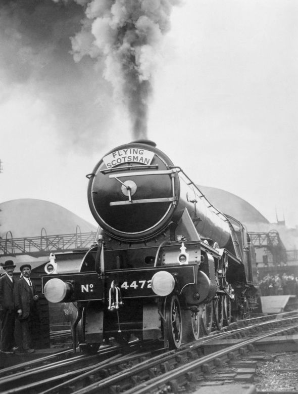

History
The Flying Scotsman Was designed by Sir Nigel Gresley as part of the A1 class of locomotive, respectively the most powerful class on the railroad. It came out of the manufactuerer Feburary 24, 1923. The locomotive served for the newly formed London and North Eastern Railway(LNER). In 1934, The Flying Scotsman broke the speed record going an Astonishing 100 Miles Per Hour (MPH) on a trail run.

In 1947, the locomotive was refitted with a "bangio" styled dome, on of which it carries to this day. The flying scotsman had a very successful career until the 1960's when everything for steam power would change forever.
In the Late 1950's early 1960's, steam power was being replaced by disesel engines. Due to this, The Flying Scotsman was taken out of service in 1963. The locomotive in 2004 was baught for England and has been renovated the past ten years to have a modern oil burning boiler at a cost of 4.2 million British pounds. $5.9 million in USD! In Feburary 2016, the Flying Scotsman returned to service on the rails and will be taken passengers once again on tours.